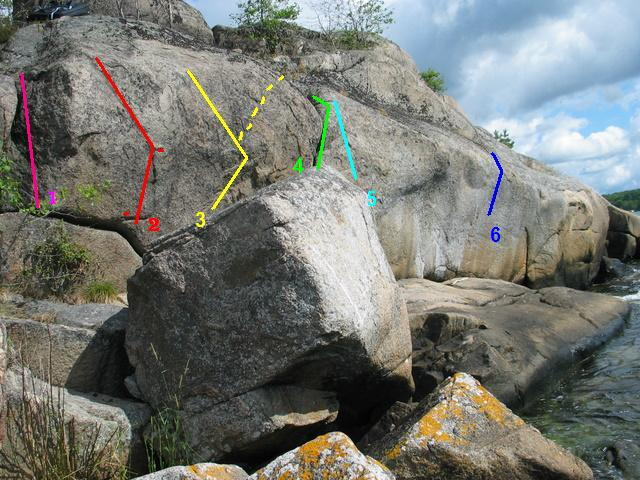

Lat: 56.163046 Long: 14.905958
I Karlshamn finns det en del boulder som ligger på cykelavstånd från stan. Kan även vara värt ett stop om man har vägarna förbi. Tyvärr överskuggas det av närhaten till Kjuge. Stenarna är utspridda i området men inte mer än att det går att promenera/cykla. Det finns mycket mer att borsta fram, speciellt i sektor 5 och på badkarsblocket. Gradeingenen är ytterst preliminär. Kom gärna med nya förslag. Återkommer med lite stenbilder också.
<googlemap version="0.9" lat="56.170214" lon="14.895058" type="map"> 56.163046, 14.905958, Sektor 1-5 Sektor 1-5 56.171313, 14.923983, Sektor 8 Sektor 8 56.155972, 14.881067, Sektor 6 Sektor 6 56.168781, 14.849482, Sektor 7 Sektor 7 56.186027, 14.842551, Sektor 9 Sektor 9 </googlemap>
Sektor 1-5
1.Badkarsblocket
Stort block med ett badkar i västra hörnet. 7 problem gjorda. Finns nog 5-10 problem till att göra.
Problem moturs från badkaret på södra sidan av blocket.
1. Krukaret, 4, Stahre. ss på Areten/spricka.
2. Bubbel, 6B+, Stahre. ss som i Krukaret men sen travers till h och upp i spricka.
3. Kallsup, 6A+, Stahre, ss på arete på jug. upp till vänster.
5. Badanka, 5+, Stahre, ss som Kallsup. Rakt upp till läpp.
7. Propp, 5, Stahre, start i undertag till höger om arete. Rakt upp.
8. Lödder, 5, Stahre, Start mitt på facet. Rakt upp.
8 1/2. Head trauma, 6b, Andreas Spångberg, 2009, Mellan Lödder och Skum. Via _endast_ undercling för högerhanden till toppen/läppen för spänstig urtoppning. Hyffsat kul.
9. Skum, 6a, Stahre, Areten vid enbuskarna till höger om Lödder. Utsteg högts upp på läppen.
9*. Projekt, Skum med ss i överhäng.
2.Solväggen
Väggen är ca 15m bred och ligger precis vid vattnet och känns igen på två stora sprickor (en längst till vänster och en mitt på.).
Problem från vänster till höger. Den nedre bilden visar problem 3,4,5 som de ser ut bakom stenen på den första bilden :
1. Sannas Klyfta, 3, Sanna. Upp i den stora klyftan snett nedanför tallen.
2. Professor drövel, 6A, Stahre, vh i underkling, hh på tydligt grepp. rakt upp. Undvik Sannas Klyfta.
3. Mojutten, 6B, Stahre, ss på tydlig jug/list. går i zick-zack o urtoppning i det kala partiet lite till vänster. Fina move med känslig urtoppning!
3* Projekt. Mojutten med urtoppning till höger mot Kalsongskott.
4. Kalsongskott, 4, Stahre, ss och upp i den stora sprickan.
5. Bremers Speedos. 5+. Start till höger om Kalsongskott, rakt upp. Undvik Kalsongskottsprickan.
6. Projekt, 7?, Långt till höger på väggen från mikrokrimparna tv om vattenbrynet.
3.DWB
Här finns en vägg med landning i vattnet :). Ogjort.
4.Åskbollen
"Kubiskt" block med 7 problem gjorda varav två överhängande på ca 6B. Man skymtar blocket från vägen. Återkommer med ticklist.
5.Område att utveckla
Här finns en massa block huller om buller. Utrymme för 50+ problem. Det är bara att börja borsta. Potential för highballs till öster i det markerade området.
6.Väggahamnen
Två block vid 15 meter brevid varandra. Ett tydligt på klipporna och ett på gräset intill.
7.Hintzeblocken
Ett syns tydligt från vägkorsningen. Försätt 50m i skogen paralellt med vägen i nordlig rikting så finns det mer flera block av överhängande typ. Lättborstat/ lite mossa.
8.
Blocken syns (går inte att missa) till höger från vägen strax efter Y-korsningen (som man skall hålla vänster i). Litet område med flera STORA block med grym potential. Påminner om det kluvna blocket (fast lite mindre) i Kjuge där Caspers Arete är. Övergängande, areter, sva, grotta. Ligger nära en tomt. Access???!
9.E22-blocket
Ganska stort block precis ovanför E22, ca 4 meter högt. Kart synligt från E22 i östlig riktning. Blocket bjuder på en överhängande vägg med några gjorda problem och potential för fler riktigt fina. På den vänstra sidan av blocket (den mot E22) finns potential för några svaproblem.
Den föreslagna parkeringsplatsen borde vara ok att använda, åtminstone kvälls- och helgtid.
Till vänster om stigen från parkeringsplatsen finns ett antal andra lite lägre block med bra potential.
1. Sträcket, 5, Johan Berglund 09, Följ den vänstra kanten till toppen.
2.a. PS, L, Johan Berglund 09, Följ den högra kanten upp till toppen, stora fina grepp, något känslig urtoppning.
2.b. Sittande PS, 5+, Johan Berglund 09, Sittstart av PS.
Kategori:Blekinge
Kategori:Saknar ledmall